Covariance Functions and Gaussian Process Generation
Source:vignettes/covariance-functions.Rmd
covariance-functions.RmdIntroduction
Covariance functions (also called kernels) are fundamental building blocks for Gaussian processes. They define the correlation structure between function values at different points, controlling properties like smoothness and periodicity.
fdars provides a comprehensive set of covariance functions for generating synthetic functional data from Gaussian processes.
Available Covariance Functions
Gaussian (Squared Exponential)
The most common choice, producing infinitely differentiable (very smooth) sample paths:
t <- seq(0, 1, length.out = 100)
# Create Gaussian covariance function
cov_gauss <- kernel.gaussian(variance = 1, length_scale = 0.2)
print(cov_gauss)
#> Covariance Kernel: gaussian
#> Parameters:
#> variance = 1
#> length_scale = 0.2
# Generate smooth GP samples
fd_gauss <- make.gaussian.process(n = 10, t = t, cov = cov_gauss, seed = 42)
plot(fd_gauss, main = "Gaussian Covariance (smooth)")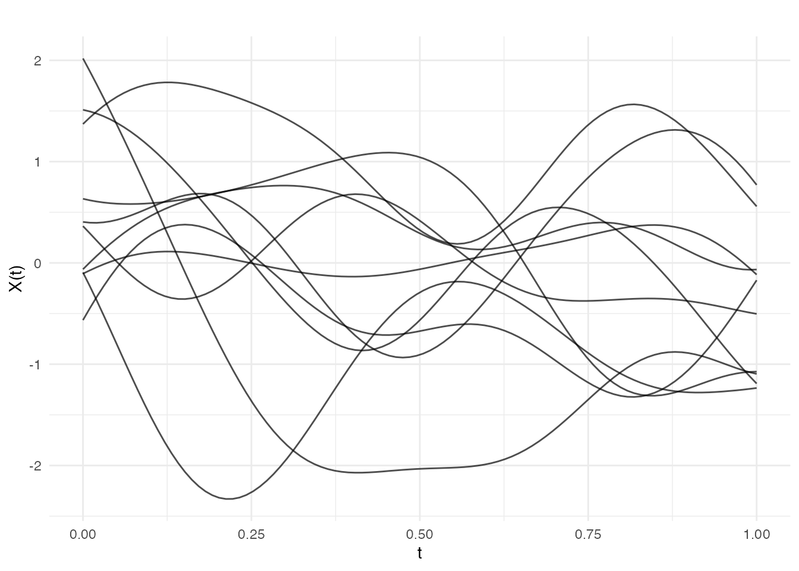
The length_scale parameter controls the correlation
distance - smaller values produce more rapidly varying functions:
# Generate data for different length scales
ls_values <- c(0.05, 0.2, 0.5)
df_ls <- do.call(rbind, lapply(ls_values, function(ls) {
fd <- make.gaussian.process(n = 5, t = t,
cov = kernel.gaussian(length_scale = ls),
seed = 42)
data.frame(
t = rep(t, 5),
value = as.vector(t(fd$data)),
curve = rep(1:5, each = length(t)),
length_scale = paste("length_scale =", ls)
)
}))
df_ls$length_scale <- factor(df_ls$length_scale,
levels = paste("length_scale =", ls_values))
ggplot(df_ls, aes(x = t, y = value, group = curve, color = factor(curve))) +
geom_line(alpha = 0.8) +
facet_wrap(~ length_scale) +
labs(x = "t", y = "X(t)", title = "Effect of Length Scale") +
theme_minimal() +
theme(legend.position = "none")
Exponential
Produces rougher paths than Gaussian (continuous but not differentiable):
cov_exp <- kernel.exponential(variance = 1, length_scale = 0.2)
fd_exp <- make.gaussian.process(n = 10, t = t, cov = cov_exp, seed = 42)
plot(fd_exp, main = "Exponential Covariance (rough)")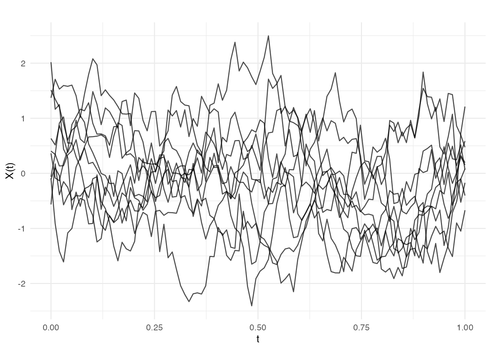
Matern Family
The Matern covariance is parameterized by smoothness parameter . It interpolates between Exponential () and Gaussian ():
# Generate data for different nu values
nu_values <- c(0.5, 1.5, 2.5, Inf)
nu_labels <- c("0.5", "1.5", "2.5", "Inf")
df_matern <- do.call(rbind, lapply(seq_along(nu_values), function(i) {
fd <- make.gaussian.process(n = 5, t = t,
cov = kernel.matern(length_scale = 0.2, nu = nu_values[i]),
seed = 42)
data.frame(
t = rep(t, 5),
value = as.vector(t(fd$data)),
curve = rep(1:5, each = length(t)),
nu = paste("Matern nu =", nu_labels[i])
)
}))
df_matern$nu <- factor(df_matern$nu,
levels = paste("Matern nu =", nu_labels))
ggplot(df_matern, aes(x = t, y = value, group = curve, color = factor(curve))) +
geom_line(alpha = 0.8) +
facet_wrap(~ nu, ncol = 2) +
labs(x = "t", y = "X(t)", title = "Matern Covariance with Different Smoothness") +
theme_minimal() +
theme(legend.position = "none")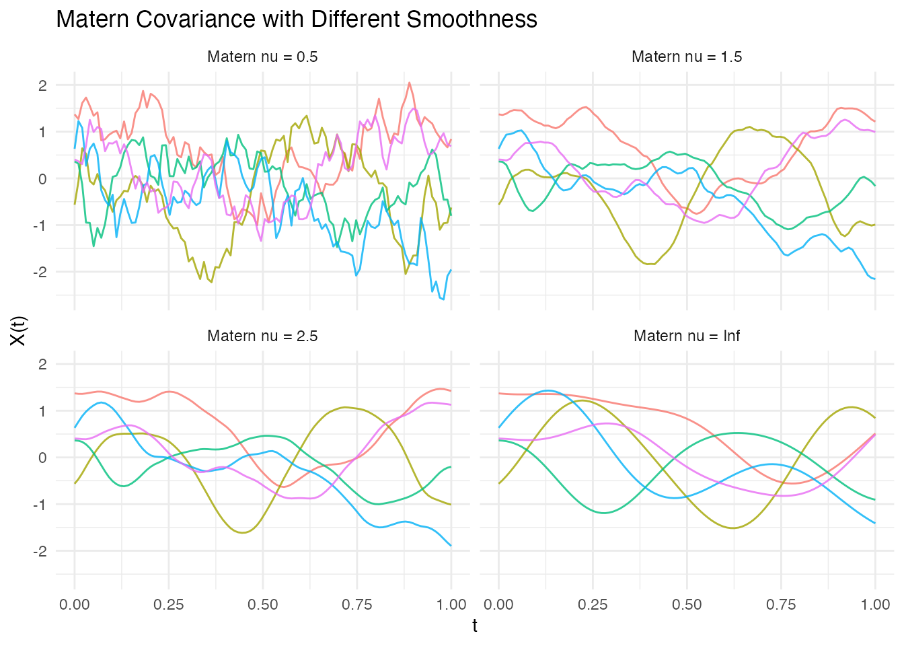
Common choices are: - : Equivalent to Exponential (rough) - : Once differentiable - : Twice differentiable - : Equivalent to Gaussian (infinitely smooth)
Brownian Motion
Standard Brownian motion covariance:
cov_brown <- kernel.brownian(variance = 1)
fd_brown <- make.gaussian.process(n = 10, t = t, cov = cov_brown, seed = 42)
plot(fd_brown, main = "Brownian Motion")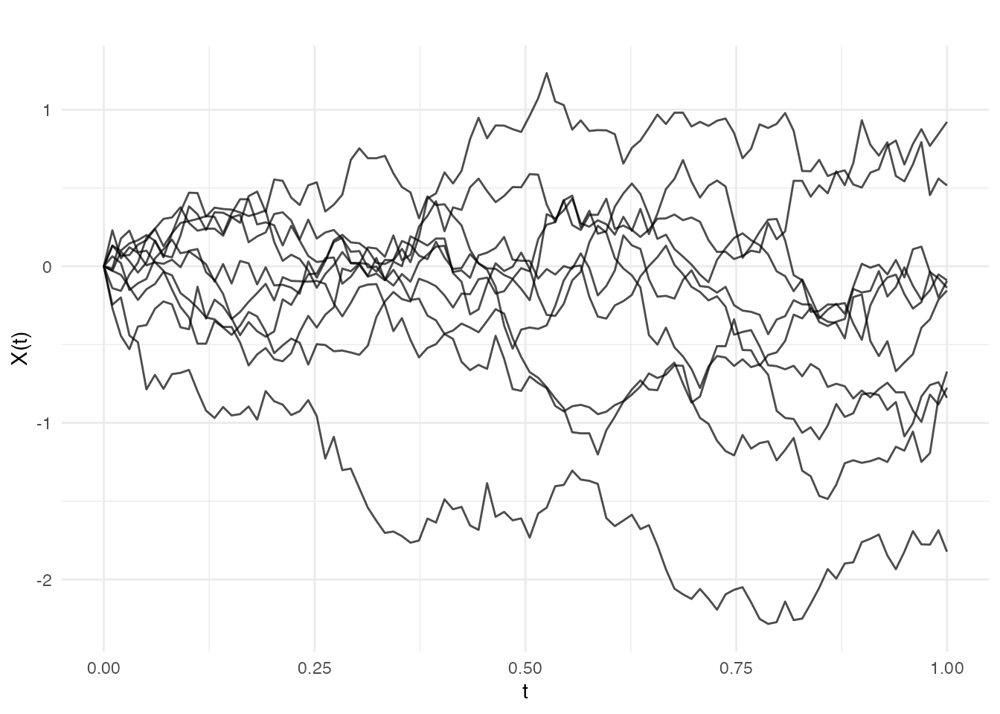
Note: Brownian covariance is only defined for 1D domains.
Periodic
For data with periodic structure:
t_long <- seq(0, 3, length.out = 200)
cov_per <- kernel.periodic(variance = 1, length_scale = 0.5, period = 1)
fd_per <- make.gaussian.process(n = 5, t = t_long, cov = cov_per, seed = 42)
plot(fd_per, main = "Periodic Covariance (period = 1)")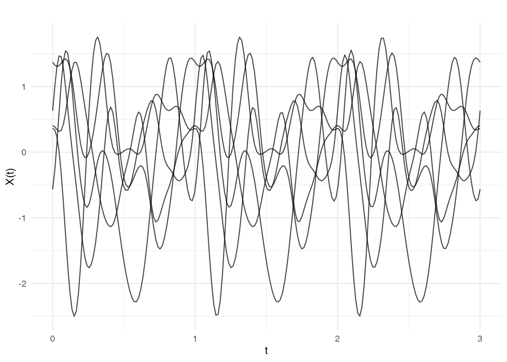
Linear
Linear covariance produces functions that are linear combinations of a constant and a linear function:
cov_lin <- kernel.linear(variance = 1, offset = 0)
fd_lin <- make.gaussian.process(n = 10, t = t, cov = cov_lin, seed = 42)
plot(fd_lin, main = "Linear Covariance")
Polynomial
Generalization of linear to polynomial basis functions:
cov_poly <- kernel.polynomial(variance = 1, offset = 1, degree = 3)
fd_poly <- make.gaussian.process(n = 10, t = t, cov = cov_poly, seed = 42)
plot(fd_poly, main = "Polynomial Covariance (degree 3)")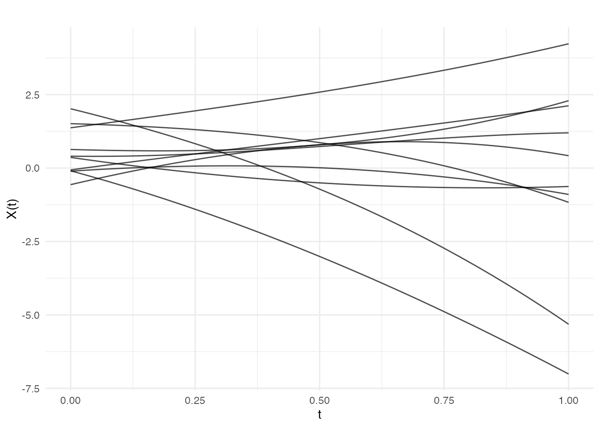
White Noise
Diagonal covariance representing independent noise:
cov_white <- kernel.whitenoise(variance = 0.5)
fd_white <- make.gaussian.process(n = 5, t = t, cov = cov_white, seed = 42)
plot(fd_white, main = "White Noise")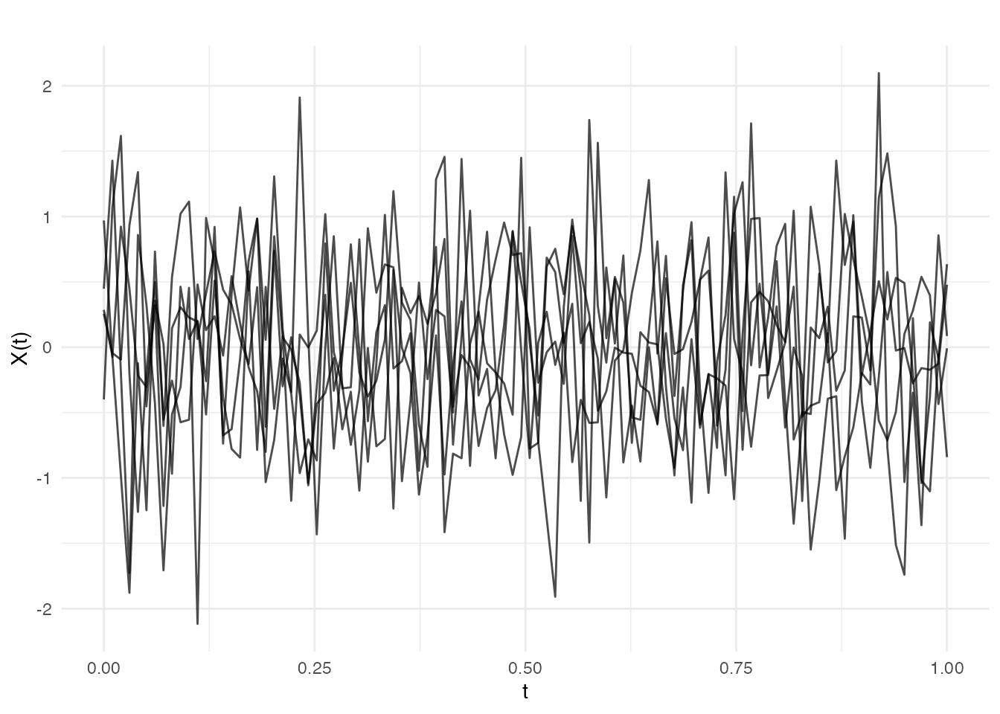
Combining Covariance Functions
Addition (kernel.add)
Sum of covariance functions models independent components:
# Signal + noise model
cov_signal <- kernel.gaussian(variance = 1, length_scale = 0.2)
cov_noise <- kernel.whitenoise(variance = 0.1)
cov_total <- kernel.add(cov_signal, cov_noise)
fd_noisy <- make.gaussian.process(n = 5, t = t, cov = cov_total, seed = 42)
plot(fd_noisy, main = "Smooth signal + noise")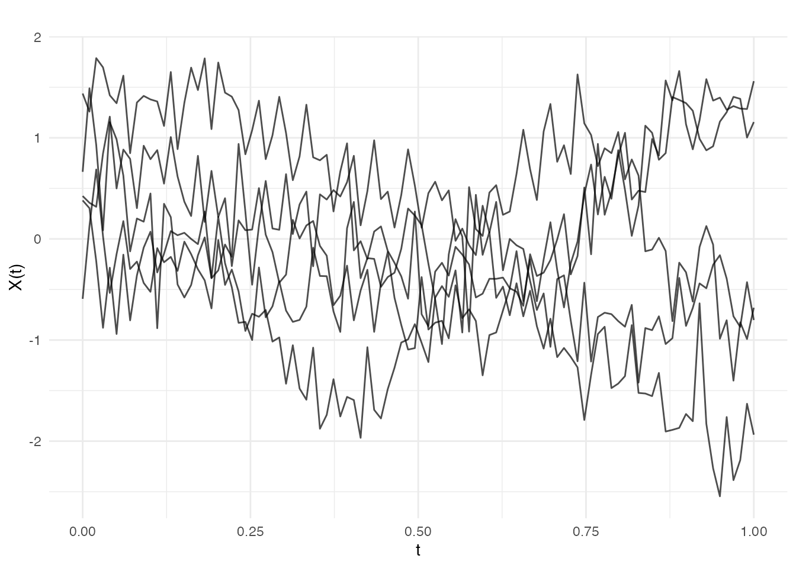
Multiplication (kernel.mult)
Product of covariance functions:
# Locally periodic: smooth envelope modulating periodic behavior
cov_envelope <- kernel.gaussian(variance = 1, length_scale = 0.5)
cov_periodic <- kernel.periodic(period = 0.2)
cov_local_per <- kernel.mult(cov_envelope, cov_periodic)
fd_local_per <- make.gaussian.process(n = 5, t = t, cov = cov_local_per, seed = 42)
plot(fd_local_per, main = "Locally periodic")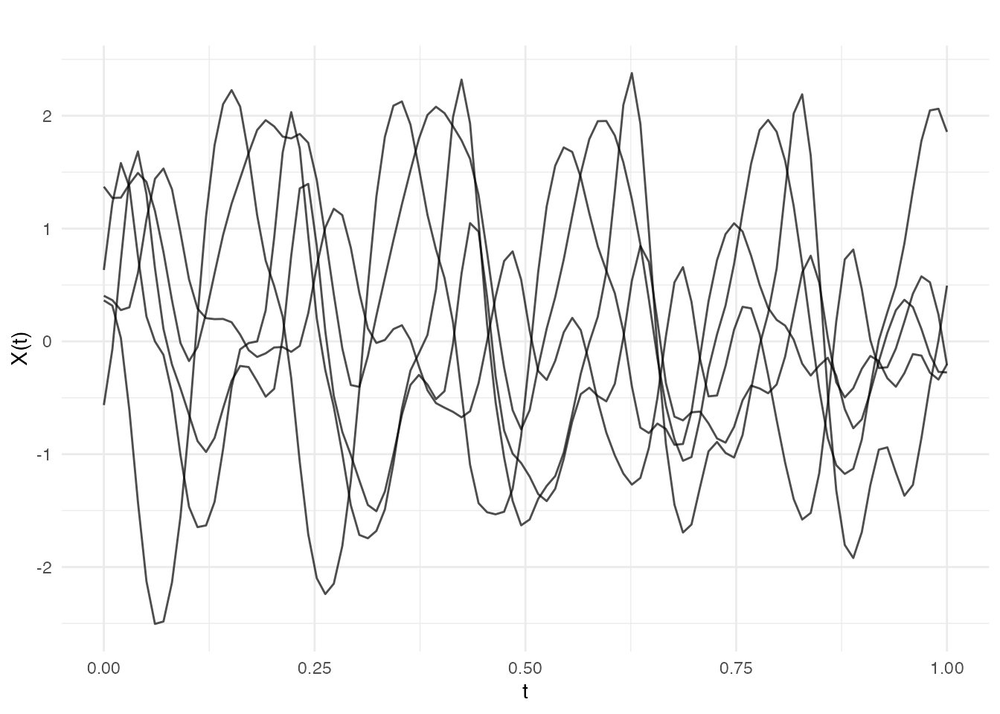
Mean Functions
Gaussian processes can have non-zero mean functions:
# Scalar mean
fd_mean5 <- make.gaussian.process(n = 10, t = t,
cov = kernel.gaussian(variance = 0.1),
mean = 5, seed = 42)
plot(fd_mean5, main = "Constant mean = 5")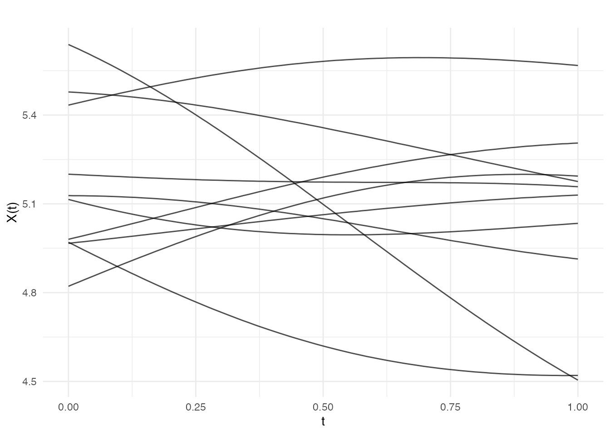
# Function mean
mean_func <- function(t) sin(2 * pi * t)
fd_sinmean <- make.gaussian.process(n = 10, t = t,
cov = kernel.gaussian(variance = 0.1),
mean = mean_func, seed = 42)
plot(fd_sinmean, main = "Sinusoidal mean function")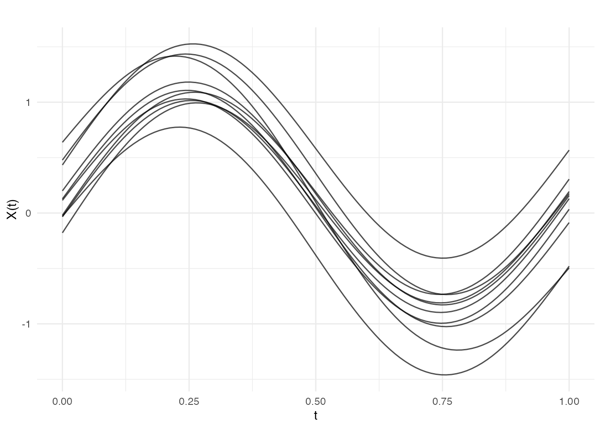
2D Functional Data (Surfaces)
Covariance functions can generate 2D functional data (surfaces):
s <- seq(0, 1, length.out = 30)
t2d <- seq(0, 1, length.out = 30)
# Generate 2D GP samples
fd2d <- make.gaussian.process(n = 4, t = list(s, t2d),
cov = kernel.gaussian(length_scale = 0.3),
seed = 42)
plot(fd2d)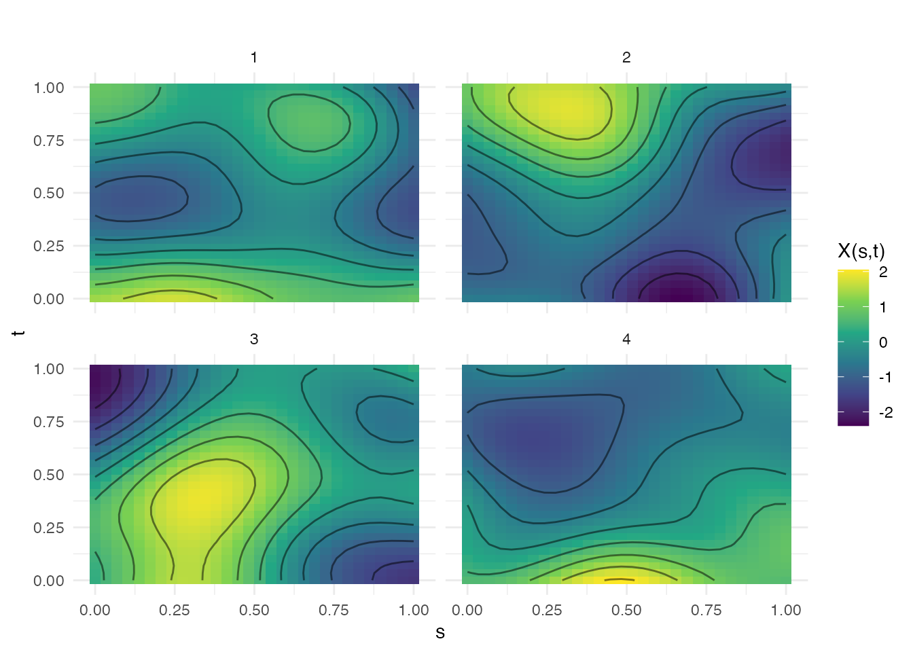
Note: kernel.brownian() and
kernel.periodic() only support 1D domains.
Reproducibility
Use the seed parameter for reproducible samples:
fd1 <- make.gaussian.process(n = 3, t = t, cov = kernel.gaussian(), seed = 123)
fd2 <- make.gaussian.process(n = 3, t = t, cov = kernel.gaussian(), seed = 123)
all.equal(fd1$data, fd2$data) # TRUE
#> [1] TRUEComparison of Smoothness
# Generate data for comparison
kernels <- list(
list(name = "Gaussian (very smooth)", cov = kernel.gaussian()),
list(name = "Matern 5/2", cov = kernel.matern(nu = 2.5)),
list(name = "Matern 3/2", cov = kernel.matern(nu = 1.5)),
list(name = "Exponential (rough)", cov = kernel.exponential())
)
df_smooth_comp <- do.call(rbind, lapply(kernels, function(k) {
fd <- make.gaussian.process(n = 3, t = t, cov = k$cov, seed = 1)
data.frame(
t = rep(t, 3),
value = as.vector(t(fd$data)),
curve = rep(1:3, each = length(t)),
kernel = k$name
)
}))
df_smooth_comp$kernel <- factor(df_smooth_comp$kernel,
levels = sapply(kernels, function(k) k$name))
ggplot(df_smooth_comp, aes(x = t, y = value, group = curve, color = factor(curve))) +
geom_line(alpha = 0.8) +
facet_wrap(~ kernel, ncol = 2) +
labs(x = "t", y = "X(t)", title = "Comparison of Smoothness") +
theme_minimal() +
theme(legend.position = "none")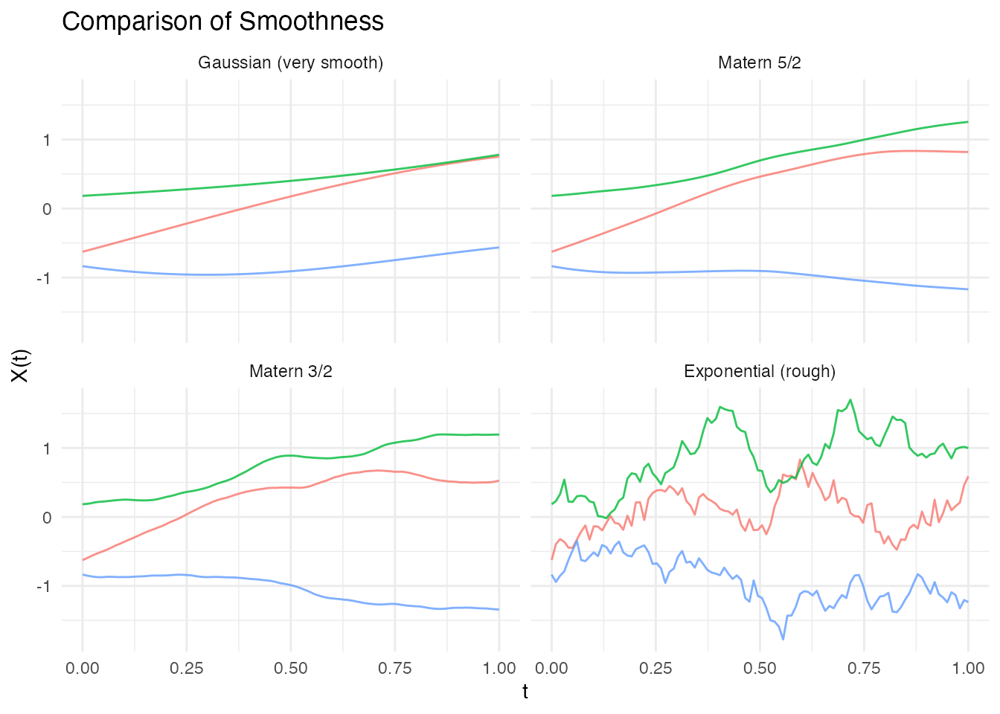
Summary Table
| Covariance | Parameters | Smoothness | Notes |
|---|---|---|---|
| Gaussian | variance, length_scale | Most common, very smooth | |
| Exponential | variance, length_scale | Rough, non-differentiable | |
| Matern | variance, length_scale, nu | Flexible smoothness | |
| Brownian | variance | 1D only, non-stationary | |
| Linear | variance, offset | - | Linear functions |
| Polynomial | variance, offset, degree | - | Polynomial functions |
| WhiteNoise | variance | - | Independent noise |
| Periodic | variance, length_scale, period | 1D only, periodic |